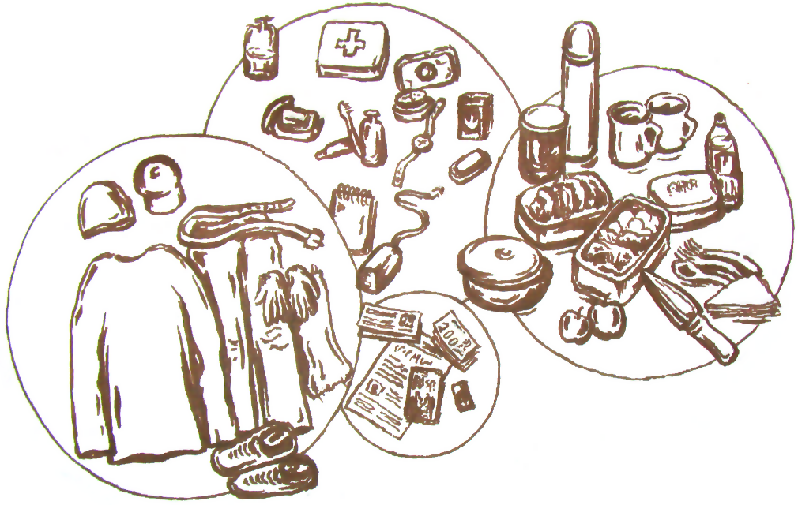
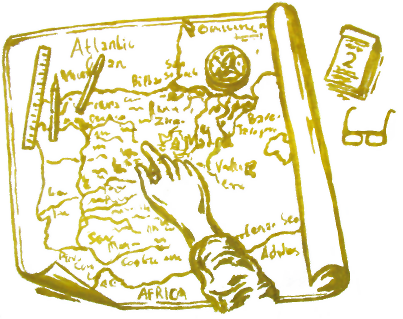
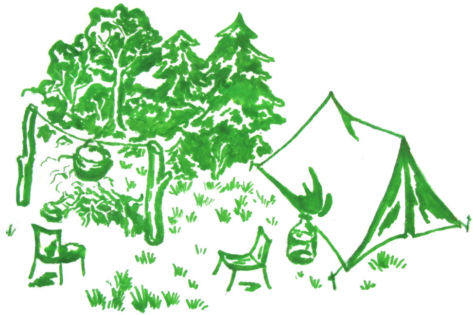

Як спланувати похід?
-
Приступаємо!
Якщо ви збираєтеся вийти на прогулянку на кілька годин (на велосипеді, чи пішки), не плануйте маршрути, які вам добре відомі! Якщо ви плануєте похід на день, кілька днів чи більше, зробіть його цікавим і незабутнім. Пізнавайте світ, робіть відкриття, йдіть назустріч викликам... Користуйтеся усіма можливостями, адже життя не таке довге як здається!
-
Оцінка

З'ясуйте особливості вашої поїздки чи походу. Чим довший і складніший похід, тим більшу відповідальність ви на себе берете. Пора року, погода, природне середовище, клімат, рельєф, різноманітні ризики — ті фактори, які можуть посприяти гарній та незабутній подорожі, або ж навпаки, зробити її схожою на подорож в стилі серіалу "Вижити будь-якою ціною". Зважте усі труднощі та виклики, які можуть трапитися в дорозі. Складіть список речей, які потрібно взяти з собою. Можливо погодні умови зміняться.
Якщо ви плануєте похід (поїздку) в колективі або з другом, з’ясуйте його (їх) потреби, зацікавлення, схильності до певних факторів кожного з вас. Загальна довжина маршруту залежить від вашої групи і здатності ваших напарників до тих чи інших походів. Коли ситуація дозволяє — користуйтеся можливістю розмовляти! Хороший підхід попередньо знайти історію місця, куди ви будете прямувати, події які там відбувалися, або будь-яку іншу інформацію про нього, щоб розповісти іншим.
Великий похід по гірській місцевості, по дикій природі та несприятливих погодніх умовах, або гірська велосипедна прогулянка — це вже те, що вимагає певної фізичної підготовки, витривалості, певного досвіду. У такому випадку подумайте про страховку, яку ви можете придбати у страховому медичному полісі. Якщо ви організатор такого походу, віднесіться до цього з душею і потурбуйтеся про свою групу. Для організатора походів може корисна наступна інформація:
Як організувати похід;
Як підготуватися до походу в гори;
Техніка безпеки туриста в Карпатах;
Tactical tourism (PDF).Робіть зупинки на фотографії, перерви на перекуси. Робіть відпочинки частіше, особливо якщо ваша група не складає тільки хлопців. Знавці походів рекомендують пити трохи води через кожні 30 хв. Не забувайте, що добова потреба людини у воді в спекотну погоду — до 2,5 літрів, що майже в 2.5 рази більше від норми у звичайний період. Якщо пора року — не літо, температура повітря є нижчою за 20 °С, візьміть з собою гарячі напої і по можливості термос. Не забудьте про їжу. Судочок з родзинками і термос з чаєм не займатимуть багато місця, але цього може бути не достатньо для потреб організму. Більше порад про їжу в поході ви можете отримати тут:
Їжа та посуд для туриста;
Харчування в поході — поради для туриста;
"Сніданок туриста" або Що приготувати у дорогу.Проведений час буде яскравим і додасть вам нових сил і бажань, якщо ви будете прагнути досягнути гармонії у кожній сфері потреб.
-
Визначаємо маршрут

Визначайте маршрут перш ніж рушаєте в дорогу, якщо він новий для вас. Є гарні мобільні додатки, які дадуть змогу прокласти шлях на карті, виміряти відстань і час мандрівки. Якщо у Вас немає такого додатку на мобільному пристрої, ви можете встановити його. Якщо ви не маєте можливість скористатися додатком, бажано мати принаймні паперову карту. У цьому випадку ознайомтеся з картою наперед, проведіть маршрут простим олівцем, або проставте початкові і кінцеві точки, і точки Ваших зупинок. Для великих походів також корисно мати компас, запальничку або сірники, PowerBank із USB-шнуром для зарядки мобільного, ліхтар.
Пам'ятайте що реальна відстань може бути набагато довшою, ніж та яка показана на карті. Середня швидкість пересування людини — 5 км/год (або 3.1 миль/год), велосипедиста — 10 ÷ 30 км/год. (6.2 ÷ 18.6 миль/год).
Користуйтеся правилом «Кататися там, де добре кататися, і бігати там, де гарно бігається». Не варто обирати довгий і сладний маршрут. Часто навіть для велопрогулянки краще знайти коротший маршрут, який не виснажить у дорозі, але залишить приємні та цікаві спогади і принесе задоволення. Якщо мобільний планувальник запропонує занадто довгий маршрут, можна спробувати проставити точки по-інакшому. Зазвичай мобільні планувальники можуть показувати по кілька шляхів різними кольорами, щоб дати змогу вибрати користувачу найкращий. Є додатки, які використовують так звані «конструктори маршрутів»: використовуючи дані про активність інших анонімних користувачів, пропонують найбільш використовувані маршрути.
Якщо ви встановили мобільний планувальник — використовуйте його різні можливості: додавання власних маршрутів, вибір транспорту, зміни інтерфейсу тощо. Якщо ви помітили баги чи недоліки — користуйтеся зворотнім зв’язком, щоб повідомити розробників про мінуси.
-
Думаємо «на 3 кроки вперед»

Не поспішайте збиратися в дорогу, навіть якщо ви обміркували основні деталі. Сплануйте поїздку за тиждень чи за місяць. Обговоріть поїздку (похід) з друзями чи рідними. Підготуйте «аптечку». Вона інколи може стати дуже потрібною. Продумайте як краще зібрати речі та спакувати їх. Розділіть це завдання на частини, не беріться за усе одразу! Поширена помилка — відключати напіврозряджений телефон або ставити його у режим політ. Зарядіть акумулятор телефона завчасно перед тим як рушати в дорогу. Якщо з цим проблеми, виходьте на зв’язок час від часу з сім’єю (друзями).
Якщо ви плануєте похід з товаришами, розподіліть навантаження на кожного. Жінка зазвичай несе менше речей з собою, або нічого, в залежності від її фізичного стану. Якщо подорож займатиме більше одного дня, а ви плануєте ночівлю у місцевих, сконтактуйте з ними завчасно. У такому випадку дізнайтеся про кількість людей, яких може взяти хазяїн, умови житла і вартість проживання, місце їхнього розташування. Можлива наявність передоплати за житло. Поцікавтеся відгуками відвідувачів про житло.
-
Невдалося? «Перший блін завжди комом»
Рідко кому вдається спланувати вдалий похід з першого разу. Якщо у Вас мало досвіду, сплануйте нескладний похід, який не займе багато часу і не забере багато сил. Якщо можливі певні ризики або ускладнення, з якими ви не зіштовхувалися — подумайте як їх усунути і доведіть до відома рідним чи друзям про ваші наміри, візьміть телефон, щоб з бути на зв'язку. Не варто запрошувати у похід багатьох друзів, не маючи досвіду самостійно вирішувати завданнями та проблемами, які зазвичай можуть трапитися.
Набувайте досвіду, знань і практики з кожним наступним кроком — і ви отримаєте впевненість!
-
Не бійтеся планувати далекі походи і поїздки
Якщо у Вас є вільний час, досвід, фінанси та можливості — не бійтеся робити більші кроки! Якщо у місці вашого проживання вам усе давно знайоме, відкривайте світ далі. Пізнавайте свою батьківщину та спадщину, здійснюючи поїздки по рідній країні. Подорожі за кордоном — чудова можливість пізнати світ ширше, зробити не аби-які відкриття і навіть змінити життя. Як казав Святий Августин: «Світ — це книжка і той, хто не подорожує, читає лише одну сторінку.».